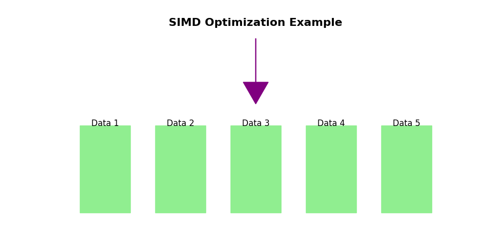

// Allocate on heap
int* heapArray = new int[size];
// Free memory
delete[] heapArray;
Pointers store the memory address of variables and allow direct data manipulation.
// Declaring and using a pointer
int var = 10;
int* ptr = &var; // Pointer to var
*ptr = 20; // Modify var through ptr
Enable dynamic selection of functions, useful for applying different audio effects.
// Declaring a function pointer
float applyGain(float sample) {
return sample * 0.8f;
}
float (*effectFunc)(float) = applyGain; // Assign function
float processedSample = effectFunc(1.0f); // Call through pointer
// Creating a dynamic array
int bufferSize = 1024;
float* buffer = new float[bufferSize];
// Free memory after use
delete[] buffer;
Vectors automatically resize, making them ideal for dynamic buffers.
// Using std::vector for dynamic arrays
#include <vector>
std::vector<float> buffer(size);
buffer.push_back(value); // Adds value, resizes if needed
Using pointers to traverse and modify an audio buffer.
void applyGain(float* buffer, int size, float gain) {
for (int i = 0; i < size; i++) {
buffer[i] *= gain;
}
}
new with delete to avoid memory leaks.SIMD (Single Instruction, Multiple Data) allows parallel processing of data, increasing performance in audio processing.
Improves performance by distributing tasks across multiple threads, essential for real-time audio applications.